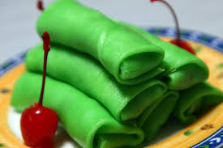

Dh
Dessert House
Rolled Pancake

Rolled Pancake
From Java
Rolled pancake
is a typical food of Indonesia and Malaysia which can be classified as pancakes filled with grated coconut mixed with liquid Java sugar. This content is called unti . The mention of the name Dadar Gulung is different in some areas including the Malaysian language is Kuih Ketayap and Kuih Lenggang . Dadar Roll skin is green because it is given suji leaf coloring. History of Omelette Rolls.
Dadar Gulung is one of Indonesia's traditional foods originating from the island of Java. The origin of Dadar Gulung originated from the Romans who recognized it as Pancake. Pancakes are a popular food in Europe since 1430 AD In Europe, Pancakes are known as typical foods of the East. In its development, this food was also adopted by other countries. In Germany it is called pfannkuchen. In France it's called Crepes , and in America it's called Nohehick. In Indonesia, there is also a food like this called Dadar Gulung. What are the ingredients of the Omelet Roll.
How to preserve
Dadar Gulung can be preserved by using it during important events and custom events so that it can continue to be used in the event. Generally on Javanese rituals and customs.
How to get an omelette roll
Dadar Gulung is commonly found in Traditional Markets and is often found in the surrounding environment.
Axiology
The function of the rolled omelette is:
For dessert
As food in a religious ritual
As food at formal events
Facebook
Instagram
Twitter